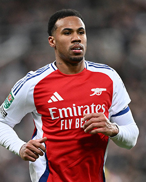
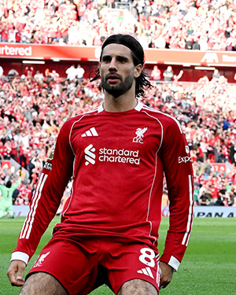
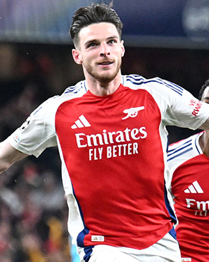

Bruno Fernandes, plays for Manchester united. He has the highest amount of assists in the premeir league, and is very consistent.

Erling Haaland is a striker for Manchester city. He has the most goals currently in the premier league and is great for City.

Gabriel Magalhaes, is a centre back for arsenal. He has been great for Arsenal and is one of if not the best defender in the league.

Dominik Szobozlai, is a cam or rb for liverpool. He has been great right now and is one of the best freekick takers in the league.

Declan Rice, is a central defensive midfielder for Arsenal. He is a very consistent box to box midfielder and has been very good for Arsenal.